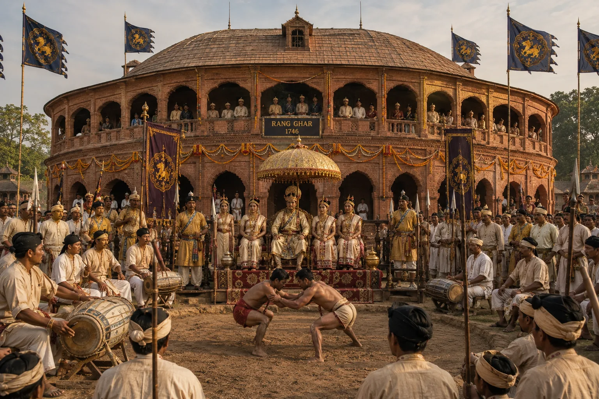

Construction and Dedication of the Masonry Rang Ghar
1744 · The Tungkhungia kings

Pramatta Singha reconstructs Rang Ghar in permanent fired brick and egg-mortar as a magnificent two-storied oval sports colosseum.
Sources have not yet been catalogued for this record.
People: Pramatta Singha (Sunenphaa)